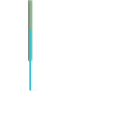

名前
ST_Difference — ジオメトリBにインタセクトしないジオメトリAの部分を表現するジオメトリを返します。
概要
geometry ST_Difference(geometry geomA, geometry geomB);
説明
ジオメトリBにインタセクトしないジオメトリAの部分を表現するジオメトリを返します。これは、ジオメトリA - ST_Intersection(A,B)と見ることができます。Aが完全にBに含まれる場合に、空ジオメトリコレクションが返されます。
![[注記]](images/note.png) | |
並び順の問題があります。B - Aでは、常にBの一部を返します。 |
GEOSモジュールによって実現しています。
 This method implements the OpenGIS Simple Features
Implementation Specification for SQL 1.1. s2.1.1.3
This method implements the OpenGIS Simple Features
Implementation Specification for SQL 1.1. s2.1.1.3
This method implements the SQL/MM specification. SQL-MM 3: 5.1.20
This function supports 3d and will not drop the z-index. ただし、差を取ってZインデクスを戻す時に、X Yのみ考慮に入れているように見えます。
例
|
 元のラインストリングと一緒に表示
|
二つのラインストリングの差
|
2次元で安全です。ST_SymDifferenceで出てくるのと同じジオメトリです。
SELECT ST_AsText(
ST_Difference(
'LINESTRING(50 100, 50 200)'::geometry,
'LINESTRING(50 50, 50 150)'::geometry
)
);
st_astext
---------
LINESTRING(50 150,50 200)
3次元では必ず正しい動作をするわけではありません。
select ST_AsEWKT(
ST_Difference(
'MULTIPOINT(-118.58 38.38 5,-118.60 38.329 6,-118.614 38.281 7)' :: geometry,
'POINT(-118.614 38.281 5)' :: geometry
)
);
st_asewkt
---------
MULTIPOINT(-118.6 38.329 6,-118.58 38.38 5)